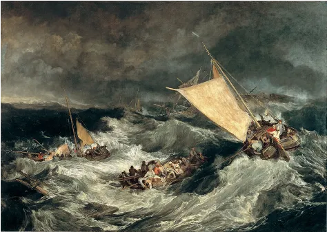
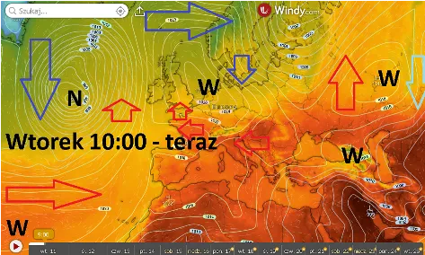
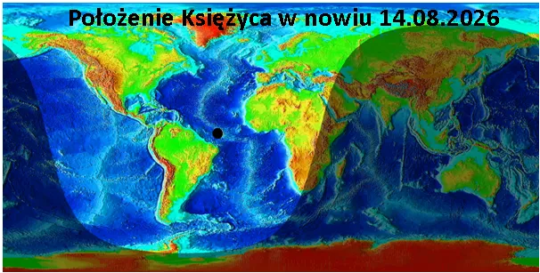
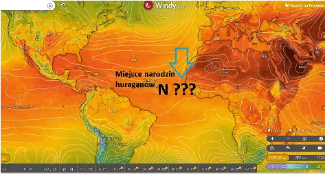

Okręt flagowy światowej ciemnoty tonie, a my mu dołożymy jeszcze spory balast.
Okręt flagowy światowej ciemnoty tonie, a my mu dołożymy jeszcze spory balast.
Prognoza pogody to latem loteria. Czytelnicy tego bloga wiedzą, że Księżyc potrafi zdemolować każdy model pogody podnosząc ocean o kilka metrów i zalewając ciepłymi wodami szelf kontynentalny. Jednocześnie wyciąga on z głębin oceanu chłodne wody i radykalnie zmienia układ ciśnień i cyrkulacji. Ochłodzenie się powierzchni oceanu implikuje brak chmur i budowanie się wyżu. Ocean zbyt gorący tworzy wir niżu i się sam schładza mieszając ocean gigantycznymi falami.
Przez kilka lat studiowałem geofizykę Ziemi i klimatologię i z pełną odpowiedzialnością twierdzę, że dane zbierane przez wszelkie satelitarne czujniki są mało warte. W tych danych jest dużo błędów natury technicznej i pomiarowej jak np. wiecznie zachmurzone obszary okołobiegunowe praktycznie nie są dostępne do ciągłego pomiaru, a publikowane zdjęcia “zlodzenia” to estymaty oparte o poprzednie estymaty, itd.
Ale co najważniejsze globalny system pomiaru klimatu opiera się na temperaturze wód na jej samej powierzchni. To jakby wielki domek z kart powiesić na pajęczej nici, jeden podmuch wiatru i wszystko staje się stertą gruzu. Potężne prądy morskie i sztormy zmieniają ten obraz niezrozumiały dla człowieka, co widać po beznadziejnie błędnych prognozach.

Wyż, który miał dziś być na prawo od Polski i jutro przynieść “afrykańskie upały” stoi sobie na lewo drwiąc z zaklęć szamanów i ściąga zimne powietrze z północy. Co prawda model zapowiada, że to nastąpi za kolejne dwa dni, ale to loteria. Nie wiemy jak pływy oceaniczne wymieszają głębiny oceanów i co się stanie, gdy w nowiu, czyli na linii prostej, między Ziemią a Słońcem 14 sierpnia nad Atlantykiem przejdzie Księżyc. Od kilku miesięcy z powodu zimnego Atlantyku u brzegów Afryki nie narodził się żaden huragan. Za dwa, trzy dni dowiemy się, czy płytki niż u brzegów Afryki stanie się choć zalążkiem burzy tropikalnej i z Karaibów wyrwie choć trochę wilgoci, by ją przenieść do nas, jak to było od zawsze.

Było, ale się zmieniło, media epatują gorącym Morzem Śródziemnym, ale ono jest tylko lokalnym basenem poza systemem globalnych oceanów, a jest gorące właśnie z powodu zimnego Atlantyku. Ten nie dając chmur w tym rejonie wystawia wody Hiszpanii, Włoch, Grecji, Turcji na bezlitosne Słońce i lokalna “sadzawka” jest cieplutka jak płytki basen ogrodowy bez przepływu.

Jak miesiąc temu czekamy na Księżyc, bo nie da się przewidzieć ruchów złożonego układu bez znajomości i rozumienia tego, co w nim się dzieje. Człowiek jest wielki i jego umysł rozwiązuje największe zagadki, ale ostatnie kilka dekad zaorały świat naukowy i geniusze zadający pytania są gnębieni i odsuwani od możliwości robienia badań. Zachodnia cywilizacja skręciła do ślepego zaułka nazywanego pogardliwie “szamaństwem”,choć powinno się mówić szamanizmem.
Nie popadajmy jednak w czarną rozpacz, nasz świat nie jest dziś definiowany jako terytorium, ale jako sieć ludzkich powiązań. Tworzymy społeczność odrzucającą doktrynalizm tam, gdzie istotą rozwoju człowieka jest wątpliwość i poszukiwanie, jesteśmy racjonalni i kropka. W USA kurs oficjalny wrócił do rozumu jako takiego, choć siły ciemnoty ciągle tam ściemniają. Czas na Europę! I tu mam dla Was powód do radości.
Zostałem zaproszony do prowadzenia panelu energetyczno-klimatycznego na największej polskiej imprezie biznesowo -naukowo-politycznej. Będzie się działo! Jest to w dużej mierze Wasz sukces, Wasze wspieranie mnie i rozsyłanie moich raportów i felietonów jest tu kluczowe, za co bardzo Wam dziękuję! Jesteśmy jak łódź podwodna lub góra lodowa: mało kto nas widzi, ale poczują nas wszyscy.
Paweł Klimczewski